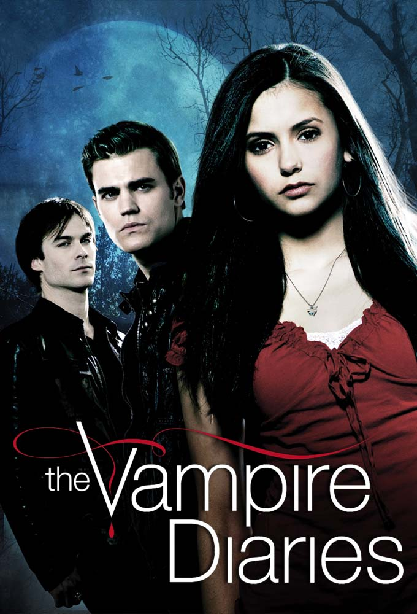

The Vampire Diaries é uma série de televisão americana de drama sobrenatural e fantasia desenvolvida por Kevin Williamson e Julie Plec. Baseia-se na série de livros homónima escrita por L. J. Smith.
A história foca-se na vida de Elena Gilbert, uma jovem adolescente que perdeu os pais num acidente de carro, e que se apaixona por um vampiro centenário chamado Stefan Salvatore, acabando por se envolver também com o irmão misterioso e perigoso deste, Damon Salvatore.
